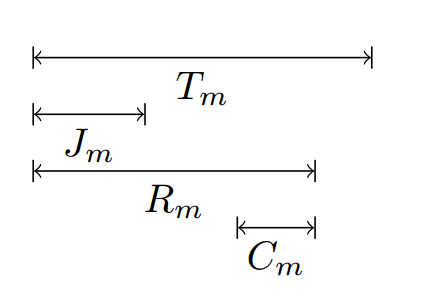

Introducción al analisis temporal en CAN
¿Por qué es importante?
- Por la necesidad de conocer el mayor tiempo de retardo de un mensaje existente en el sistema
- Primer estudio temporal realizado por Tindell
- Aumento de su uso del 30% al 80%
Buscando el peor caso:
Analizemos la serie:
11111-0000-1111-0000...
Tras el bit stuffing
11111-00000-11111-00000...
Podemos ver que el tiempo de envío de trama será:
\[ C_m = (g + 8s_m + 13 + \Big \lfloor \frac{g + 8s_m -1}{4} \Big \rfloor)\tau_{bit} \]
Donde:
- g será la cantidad de bits de dirección enviados
- $s_m$ será la cantidad de bits en el campo de datos
Parámetros del modelo:
- $m$: La prioridad del mensaje
- $J_m$: El tiempo que se tarda en poner en cola el mensaje.
- $T_m$: El periodo con el que se envía el mensaje
- $D_m$: El retardo máximo permitido.
- $R_m$: El tiempo máximo que transcurre desde que se inicia el evento que origina el mensaje hasta que se envía. Se dirá que un mensaje se envía a tiempo real si ($R_m \leq D_m$).

Análisis de Tindell:
El tiempo que tarda en eviarse un paquete será el tiempo que tarda en ponerse en cola dicho mensaje más el tiempo de retardo en la cola $w_n$ más el tiempo de envío $C_m$
\[ R_m = J_m + w_m + C_m \]
En el caso de el dispositivo con la mayor prioridad:
\[ w_n = B_m = \max_{k \in lp(m)}(C_k) \]
Por lo tanto la ecuación final de Tindell:
\[ w_n = B_m +\sum_{\forall k \in hp(m) } \left \lceil{\frac{w_n + J_k + \tau_{bit}}{T_k}}\right \rceil C_K \]